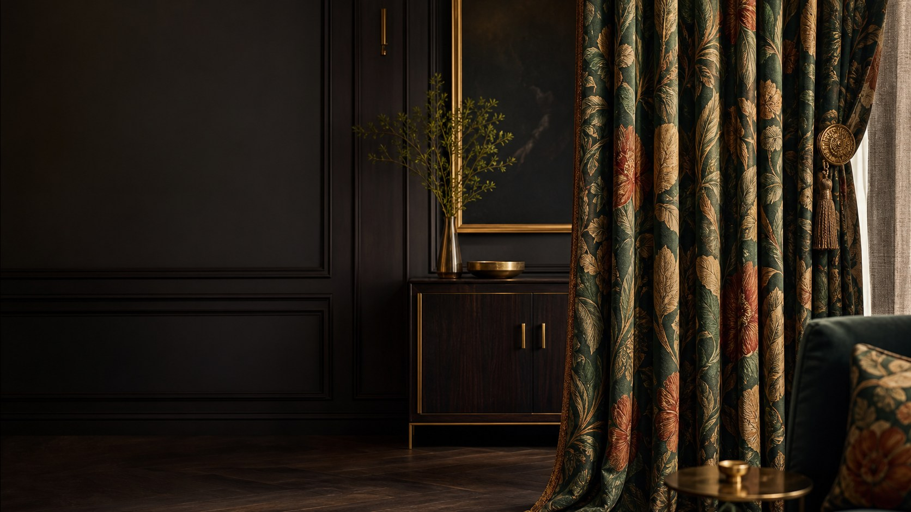

01 / Residential


Design-led window treatments
Chittagong (Chattogram) is Bangladesh’s busiest port city and its commercial capital. Hills, sea air, and a fast-growing skyline shape how people live and work here. Whether you have a new apartment in Khulshi, a family home in Panchlaish, or an office in Agrabad, the right curtains change how a room looks, feels, and performs.
Curtain Canvas brings interior design-focused luxury curtains to Chittagong clients. We plan every curtain around your room’s light, furniture, colors, and window proportions so your windows look refined and work well every day.
Chittagong’s mix of port-city energy, hillside homes, and coastal weather creates its own curtain needs. Fabric, lining, and finishing should be chosen for this setting, not copied from a generic catalogue.
Curtain Canvas offers curtain solutions for homes, offices, hotels, and commercial interiors. Each option is chosen to balance style, light control, privacy, and long-term performance.
Interior-based curtains do more than dress a window—they set the mood of the room. Designed to work with your interiors rather than compete with them, they bring light, texture, and flow into balance. Because when the curtains are right, your space doesn't just look finished—it feels alive.
01 / Residential

02 / Workspace

03 / Hospitality
Curtain options selected with Bangladesh's changing sunlight, heat, humidity, and seasonal requirements in mind.

01 / Summer

02 / Rainy

03 / Autumn

01 / Late

02 / Winter

03 / Spring
Made-to-measure curtain solutions created around your window dimensions, preferred fabric, design concept, and functional requirements.
Fabric, color, length, lining, and hardware all affect the final result, and it is easy to choose wrongly. Our curtain consultancy service helps Chittagong clients decide with confidence before anything is stitched.

No two windows are the same, so we do not treat them that way. Our customized curtain solutions are planned around your exact dimensions, fabric choice, and design concept.
Choosing curtains in Chittagong takes more than a nice fabric. It takes a team that plans for your light, your windows, and your interior, and Curtain Canvas does that from the first consultation to the final fitting.
Common questions
Layered curtains, a sheer panel with a blackout or heavier fabric, suit most Chittagong homes. They give daytime privacy, control strong sun and can be adjusted as light changes through the day.
Yes, if the fabric and lining are chosen carefully. Our consultants recommend options that hang well and are practical for coastal humidity.
Yes. We make curtains to your window measurements and approved design, with fabric, pleats and finishing planned for your space.
Blackout curtains work well because they block excess light and improve privacy. Pairing them with sheers gives a softer look in the daytime.
Yes. We provide commercial and hospitality curtain solutions, planned for appearance, durability and daily use.
Start with your wall colour, flooring and furniture. Neutral tones give a calm, spacious feel, while deeper shades add richness. Our consultants can help you compare options from the catalogue.
Curtain Canvas combines interior design guidance, premium fabrics, made-to-measure tailoring and professional installation in one service, so you get curtains that suit your room and perform well.